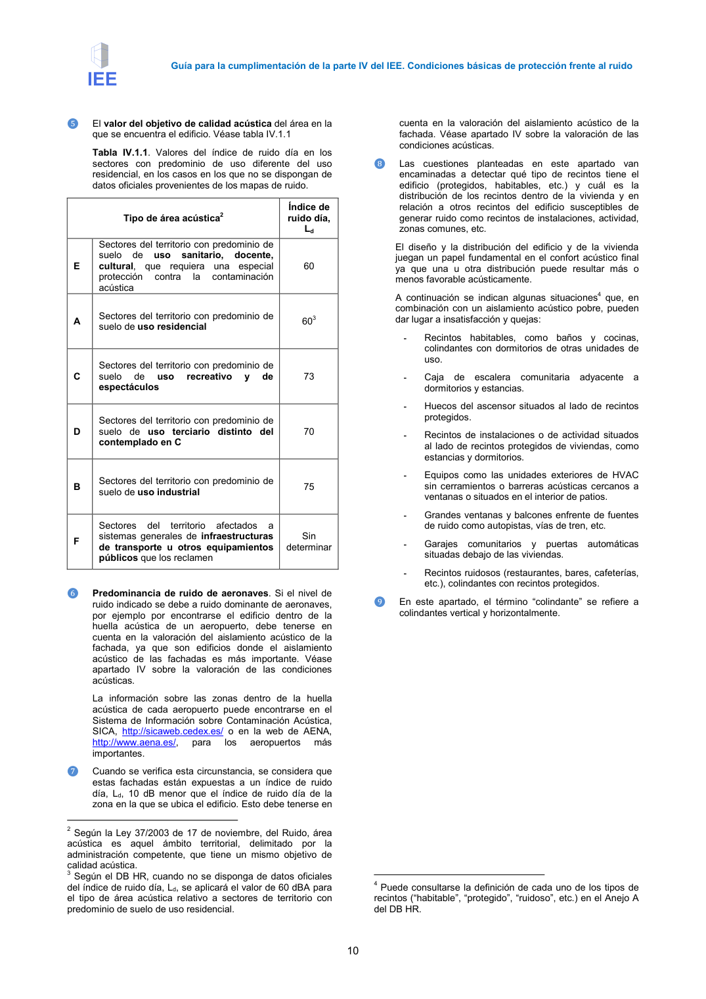

IEE 2016 · edición 2016-11-01 · capa guia
Documento GUIA-PDF-a5d4ef5252ba · SHA-256 del PDF 813669d3066c0ff79457d57b80b0512a4fbb248bc5db1f7baf473c369a064738
Página física 10 de 65.
Copia fiel del PDF fuente · Fuente oficial
Ficha de la disposición en la fuente oficial
Créditos y autoría en el PDF fuente. Reproducción con cita de fuente y autores.
Permiso literal: Se permite la reproducción del contenido total o parcial de esta Guía siempre y cuando se haga citando la fuente original.
Guía para la cumplimentación de la parte IV del IEE. Condiciones básicas de protección frente al ruido
Dirección y coordinación
Luis Vega Catalán
Mª Cristina Colomo Fernández
Eduardo González de Prado
Dirección General de Arquitectura, Vivienda y Suelo. Ministerio de Fomento
Mª Teresa Carrascal García
Instituto de Ciencias de la Construcción Eduardo Torroja. IETcc- CSIC
Autores
Mª Teresa Carrascal García
Amelia Romero Fernández
Mª Belén Casla Herguedas
Unidad de Calidad en la Construcción del Instituto de Ciencias de la Construcción Eduardo Torroja IETcc- CSIC
Se agradece la colaboración de
Belén Delgado Giménez
Fundación FIDAS
Alberto Esteban González
C.T.O. Estudios y proyectos – Gikesa
Giovanni Muzio
C.T.O. Estudios y proyectos
Francisco Labastida Azemar
Arquitecto, asesor CSCAE
Pedro F. Nogueira López
Universidad de A Coruña
Alejandro Sansegundo Sierra
Acústica SanSegundo
Esta Guía para la cumplimentación de la parte IV del IEE. Condiciones básicas de protección frente al ruido, nace en el marco del
convenio de colaboración llevado a cabo entre el Ministerio de Fomento y el Instituto de Ciencias de la Construcción Eduardo Torroja y
forma parte de la estrategia de este Ministerio de generar una serie de documentos de ayuda que faciliten la aplicación de la normativa
de la edificación y que en este caso concreto, ofrezca a los técnicos criterios para poder realizar una evaluación del estado inicial de las
edificaciones en lo referente a las condiciones acústicas de las viviendas existentes y plantear medidas que incrementen su confort
acústico.
En la redacción de este documento se ha utilizado algunos de los contenidos y de las figuras de la Guía de aplicación del DB HR
Protección frente al ruido. Dicha guía puede consultarse en:
http://www.codigotecnico.org/index.php/menu-documentos-complementarios/menu-guia-aplicacion-db-hr
Se permite la reproducción del contenido total o parcial de esta Guía siempre y cuando se haga citando la fuente original.
2Formato: Texto de la página (Markdown)
Guía para la cumplimentación de la parte IV del IEE. Condiciones básicas de protección frente al ruido
10
❺
El valor del objetivo de calidad acústica del área en la
que se encuentra el edificio. Véase tabla IV.1.1
Tabla IV.1.1. Valores del índice de ruido día en los
sectores con predominio de uso diferente del uso
residencial, en los casos en los que no se dispongan de
datos oficiales provenientes de los mapas de ruido.
Tipo de área acústica2
Índice de
ruido día,
Ld
E
Sectores del territorio con predominio de
suelo
de
uso
sanitario,
docente,
cultural, que requiera una especial
protección
contra
la
contaminación
acústica
60
A
Sectores del territorio con predominio de
suelo de uso residencial
603
C
Sectores del territorio con predominio de
suelo
de
uso
recreativo
y
de
espectáculos
73
D
Sectores del territorio con predominio de
suelo de uso terciario distinto del
contemplado en C
70
B
Sectores del territorio con predominio de
suelo de uso industrial
75
F
Sectores
del
territorio
afectados
a
sistemas generales de infraestructuras
de transporte u otros equipamientos
públicos que los reclamen
Sin
determinar
❻
Predominancia de ruido de aeronaves. Si el nivel de
ruido indicado se debe a ruido dominante de aeronaves,
por ejemplo por encontrarse el edificio dentro de la
huella acústica de un aeropuerto, debe tenerse en
cuenta en la valoración del aislamiento acústico de la
fachada, ya que son edificios donde el aislamiento
acústico de las fachadas es más importante. Véase
apartado IV sobre la valoración de las condiciones
acústicas.
La información sobre las zonas dentro de la huella
acústica de cada aeropuerto puede encontrarse en el
Sistema de Información sobre Contaminación Acústica,
SICA, http://sicaweb.cedex.es/ o en la web de AENA,
http://www.aena.es/,
para
los
aeropuertos
más
importantes.
❼
Cuando se verifica esta circunstancia, se considera que
estas fachadas están expuestas a un índice de ruido
día, Ld, 10 dB menor que el índice de ruido día de la
zona en la que se ubica el edificio. Esto debe tenerse en
2 Según la Ley 37/2003 de 17 de noviembre, del Ruido, área
acústica es aquel ámbito territorial, delimitado por la
administración competente, que tiene un mismo objetivo de
calidad acústica.
3 Según el DB HR, cuando no se disponga de datos oficiales
del índice de ruido día, Ld, se aplicará el valor de 60 dBA para
el tipo de área acústica relativo a sectores de territorio con
predominio de suelo de uso residencial.
cuenta en la valoración del aislamiento acústico de la
fachada. Véase apartado IV sobre la valoración de las
condiciones acústicas.
❽
Las cuestiones planteadas en este apartado van
encaminadas a detectar qué tipo de recintos tiene el
edificio (protegidos, habitables, etc.) y cuál es la
distribución de los recintos dentro de la vivienda y en
relación a otros recintos del edificio susceptibles de
generar ruido como recintos de instalaciones, actividad,
zonas comunes, etc.
El diseño y la distribución del edificio y de la vivienda
juegan un papel fundamental en el confort acústico final
ya que una u otra distribución puede resultar más o
menos favorable acústicamente.
A continuación se indican algunas situaciones4 que, en
combinación con un aislamiento acústico pobre, pueden
dar lugar a insatisfacción y quejas:
-
Recintos habitables, como baños y cocinas,
colindantes con dormitorios de otras unidades de
uso.
-
Caja de escalera comunitaria adyacente a
dormitorios y estancias.
-
Huecos del ascensor situados al lado de recintos
protegidos.
-
Recintos de instalaciones o de actividad situados
al lado de recintos protegidos de viviendas, como
estancias y dormitorios.
-
Equipos como las unidades exteriores de HVAC
sin cerramientos o barreras acústicas cercanos a
ventanas o situados en el interior de patios.
-
Grandes ventanas y balcones enfrente de fuentes
de ruido como autopistas, vías de tren, etc.
-
Garajes comunitarios y puertas automáticas
situadas debajo de las viviendas.
-
Recintos ruidosos (restaurantes, bares, cafeterías,
etc.), colindantes con recintos protegidos.
❾
En este apartado, el término “colindante” se refiere a
colindantes vertical y horizontalmente.
4 Puede consultarse la definición de cada uno de los tipos de
recintos (“habitable”, “protegido”, “ruidoso”, etc.) en el Anejo A
del DB HR.

Datos candidatos: compruebe celdas y notas en el PDF.